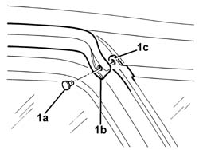
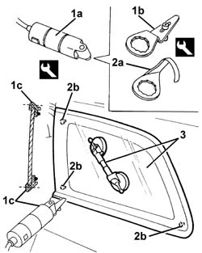
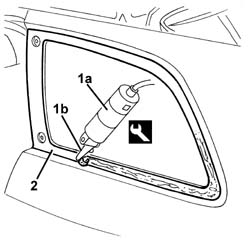
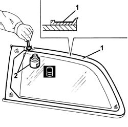
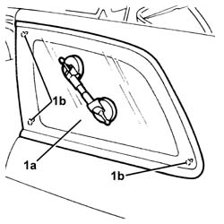
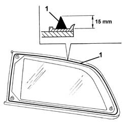
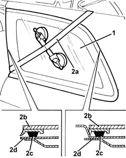

7035C14 fixed rear side window one lh or rh r r includes cleaning of housing
- Path
- Procedures > 70 FITTINGS > 7035 BODYSHELL WINDOWS > 7035C passenger compartment side fixed windows > 7035C14 fixed rear side window one lh or rh r r includes cleaning of housing
- Kind
- repair procedure (removal / refitting; the operation number is the code)
- Applies to
- all engines; all production periods
- Interactive page
- https://sloeber94.github.io/elrnDB-a156/en/#/3238784
Applies to: all engines; all production periods; only with equipment: Station Wagon
 Removing
Removing
 Refitting
Refitting7040B22 luggage compartment/load platform moulding - r+r
7040B15 (One), rear side trim mounting BRACKET left or right - R.R .
7040B28 PET transport PROTECTION and load carrying compartment COVER COMBINATION BLIND - R.R.
- 7040L44 rear compartment scuff strip - r r
7050A47 SIDE PANEL (one) for rear seat BACKREST., left or right - R.R .
7040B30 l/h or r/h side support (one) for load platform cover blind - arrange
7040H42 rear pillar trim - r r
7040H12 Roof panel REAR TRIM - R.R.
7040H62 rear window surround trim one lh or rh r r
1. Undo retaining stud (1a) from drip channel (1b) and edge (1c) of the co-moulded window seal.

Applies to: all engines; all production periods; only with equipment: Station Wagon
1. Use the vibrating cutter (1a) with blade (1b) to cut outer edges (1c) of the comoulded strip as shown in the figure, on the upper, rear and lower sides of the side window. Work from the outside of the vehicle.
 | Name | Country |
|---|---|---|
1a | Vibrating knife | 1.823.011.000 |
| Name | Country |
|---|---|---|
1b | Blade | 1.823.021.000 |
2. Fit the blade (2a) and cut the sealant strip around the perimeter of the side window. Work from the outside of the vehicle.
| Name | Country |
|---|---|---|
2a | Blade | 1.823.023.000 |
3. Remove the window once you have cut through the entire sealant strip;

Applies to: all engines; all production periods; only with equipment: Station Wagon
Refitting
Removing1. Using the vibrating cutter (1a) and blade (1b), cut and level the sealant strip in the side window housing so that the thickness left is between 0.25 and 1 mm without scratching the paint. The sealant left in the housing will act as a backing for the new bond.
| Name | Country |
|---|---|---|
1a | Vibrating knife | 1.823.011.000 |
| Name | Country |
|---|---|---|
1b | Blade | 1.823.010.000 |
2. Clean the side window seating carefully with compressed air and thoroughly degrease with heptane.
Touch up the paintwork if necessary.
If glueing takes place 60 minutes after cutting and smoothing the bead of sealant, treat the sealant surface with the specific activator and wait 15 minutes before fixing the windscreen.
 | Type | Component | Name | Qty. |
|---|---|---|---|---|
- | PUR activator | Window compartment | - | - |

Applies to: all engines; all production periods; only with equipment: Station Wagon
Check that the new window is not damaged.
1. Degrease with heptane the surface of the moulded seal to be glued.
2. Apply the activator on the degreased surface.
| Type | Component | Name | Qty. |
|---|---|---|---|---|
2 | PUR activator | (3RD' FIXED WINDOW) | - | - |
Wait about 16 minutes before proceeding with the next operation, to allow the solvent to evaporate.

Applies to: all engines; all production periods; only with equipment: Station Wagon
Avoid touching the treated area with the hands.
1. Test fit and ensure side window (1a) is correctly positioned by using locating pins (1b).

Applies to: all engines; all production periods; only with equipment: Station Wagon
1. Use an air gun to extrude a bead of sealant as evenly as possible around the perimeter of the window. Begin applying the sealant from the middle of the lower edge and continue without breaks around the entire edge of the window.
| Type | Component | Name | Qty. |
|---|---|---|---|---|
1 | Window bonding sealant | REAR WINDOW GLASS | - | - |

Applies to: all engines; all production periods; only with equipment: Station Wagon
1. Position the side window in its seating immediately after applying the sealant and bed it into position.
2. Fit retaining strap (2a) as shown in the figure and adjust strap tension to apply uniform pressure over the entire back window in order to ensure a correct match between glass (2b), sealant (2c) and side window compartment (2d).

Applies to: all engines; all production periods; only with equipment: Station Wagon
Before refitting the external and internal components of the car, check that there are no penetration points: apply soapy water using a sponge along the outer perimeter and blow through from the inside with compressed air to detect any leaks.
7040H62 rear window surround trim one lh or rh r r
7040H12 Roof panel REAR TRIM - R.R.
7040H42 rear pillar trim - r r
7040B30 l/h or r/h side support (one) for load platform cover blind - arrange
7050A47 SIDE PANEL (one) for rear seat BACKREST., left or right - R.R .
- 7040L44 rear compartment scuff strip - r r
7040B28 PET transport PROTECTION and load carrying compartment COVER COMBINATION BLIND - R.R.
7040B15 (One), rear side trim mounting BRACKET left or right - R.R .
Topics linked from this page (8)
- 7040B15 (One), rear side trim mounting BRACKET left or right - R.R .
- 7040B22 luggage compartment/load platform moulding - r+r
- 7040B28 PET transport PROTECTION and load carrying compartment COVER COMBINATION BLIND - R.R.
- 7040B30 l/h or r/h side support (one) for load platform cover blind - arrange
- 7040H12 Roof panel REAR TRIM - R.R.
- 7040H42 rear pillar trim - r r
- 7040H62 rear window surround trim one lh or rh r r
- 7050A47 SIDE PANEL (one) for rear seat BACKREST., left or right - R.R .